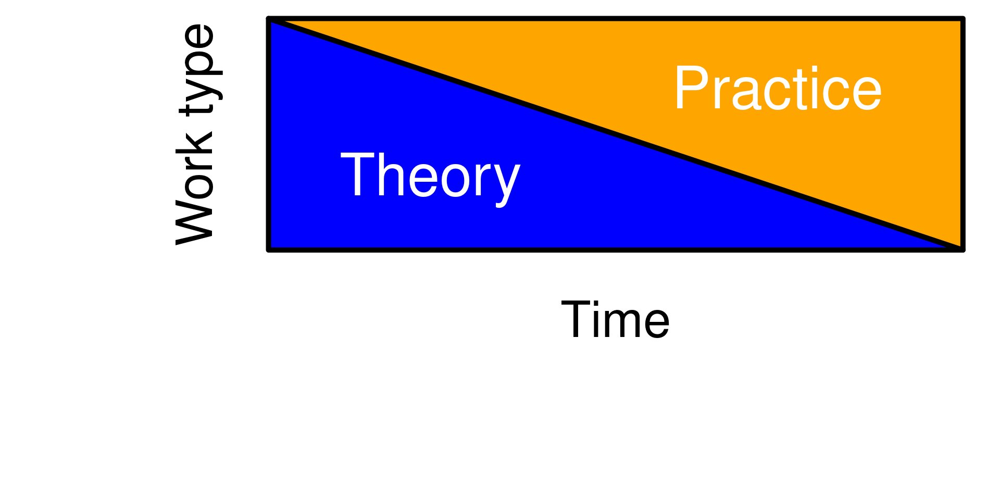

Introduction
The very basic
Internet
Network : jouvence
Password : Orford2021
Dos and don’ts at Jouvence
. . .
Be respectful of the environment
. . .
Meals will be served at La Petite Auberge
. . .
You cannot consume your own beverages inside the main buildings. However, it will be permitted to bring your own drinks in certain outdoor areas, including around the fire pit in the evening.
. . .
Glass containers are not allowed
. . .
It is forbidden to smoke cannabis on site
. . .
More details can be found in this Google Doc.
. . .
Course material
Website : https://bios2.github.io/hiermod/
. . .
On it, you will find the slides but also practical examples.
. . .
You will also find the course syllabus
. . .
Here is a brief overview of the course
Statistiques avancées en sciences de la vie (BIO709/BIO809)
3 credits course at Université de Sherbrooke
. . .
It is a pass or fail course…
. . .
So, if you get involved, ask questions, try, work… you will pass.
What we want to do during this course
. . .
Basic knowldege of statistics
- General introduction
- General overview of probability theory… for the life sciences
- Probability distribution
- Frequentist and Bayesian modelling
- Data simulation (how and when)
- Data simulation using different probability distribution
What we want to do during this course
Statistical computing
- Introduction to Stan
. . .
We will not give an introduction to any programming language (e.g. R, Python, Julia).
We assume you know one and are conformtable using it… We are more comfortable in R, but can work with many other languages (but please no Fortran !)
. . .
What we want to do during this course
Simple regression models
- Refresher in matrix algebra
- Refresher of linear model
- Generalized linear model
Simple hierarchical regression models
- Model with a single hierarchical component on the intercept
- Model with a single hierarchical component on the slope
What we want to do during this course
Complexe hierarchical regression models
- Model with multiple hierarchical terms
- Model with multiple hierarchical levels
- Hierarchical model with constraints
- Gaussian process
- Phylogenetic hierarchical models
What we want to do during this course
We also want to learn about your research… and this might influence what we see during the course !
Course general structure
General daily schedule
7h00 to 8h30 - Breakfast
8h30 to 10h00 - Lecture/Practice
10h00 to 10h30 - Break
10h30 to 12h30 - Lecture/Practice
12h30 to 13h30 - Lunch
13h30 to 15h00 - Lecture/Practice
15h30 to 16h00 - Break
16h00 to 17h00 - Lecture/Practice
17h00 to 17h30 - Let us know about your research !
17h30 to 18h00 - Break
18h00 to 19h00 - Supper
The course basics
What are hierarchical models ?
For this course, hierarchical models are regression models in which the parameters (the regression coefficients) are not defined by a single value but they are themselves given a probability distribution (Gelman and Hill 2007).
Particularities of hierarchical models
Hierarchical models are
. . .
- A challenging bit of technology (probably more than you might think!)
. . .
- Very flexible models (in many more ways that are usually expected!)
. . .
- Constrained to the same particularities as (generalized) (non) linear models (sometimes to a more severe extent)
A bit of vocabulary
. . .
Hierarchical models, as we will see them in this course, are also known under different names
. . .
- Random effect models
. . .
- Mixed models
. . .
- Multilevel models
. . .
- Variance component models
. . .
- Error component models
A bit of vocabulary
We decided to use the term hierachical model to prevent confusions that sometimes arises in the litterature about random and fixed effects, which are terms commonly used when referring to mixed effect models.
. . .
Actually, random and fixed effects have multiple definitions, which leads to confusion.
A bit of vocabulary
Multiple Definition of fixed and random effects
. . .
(Kreft and De Leeuw 1998) Fixed effects are constant and random effect vary
. . .
(Searl et al. 1992) Effects are fixed if they are interesting in themselves or random if there is interest in the underlying population
. . .
(Green and Tukey 1960) When a sample exhausts the population, the corresponding variable is fixed; when the sample is a small (i.e., negligible) part of the population the corresponding variable is random
. . .
(Roy LaMotte 2014) If an effect is assumed to be a realized value of a random variable, it is called a random effect
. . .
(Robinson 1991) Fixed effects are estimated using least squares (or, more generally, maximum likelihood) and random effects are estimated with shrinkage.
A bit of history
. . .
Because of the different name used for hierarchial models, the history of this subfield of statistics is a little murky, but we know that a few important figures in statistics dabbed into this field, most notably
. . .

Fisher R.A. (1919). The Correlation between Relatives on the Supposition of Mendelian Inheritance. Transactions of the Royal Society of Edinburgh, 52 399–433.
Good reference

A good portion of this course material is based on this book.
Great technical references

Everything is there but it can gets technical !
Implementation
. . .
- Hierarchical models have been implemented in many software packages,
. . .
- in R
lme4,brms,nlme,glmmTMB,MCMCglmm, …
. . .
- in SAS
MIXED,HPMIXED,GLMMIX, …
. . .
- in Julia
MixedModels.jl
- …
Implementation
What we will use
. . .
We will not use any of these software packages because under specific circumstances, what may seem like the same implementation of a model may lead to different answers and both can actually be right !
. . .
This is because the underlying model implemented in the software package may actually be slightly different.
. . .
Instead we will implement our own models from scratch using Stan.
R and Stan
All of the practical aspect of the course will be done with R and Stan.
. . .
RStudio
We strongly (!) encourage you to use RStudio and to start a project for the course.
R package to install
# Package on CRAN
install.packages(c("vegan",
"palmerpenguins",
"tidybayes",
"tidyverse",
"posterior"))
# run the next line if you already have rstan installed
# remove.packages(c("StanHeaders", "rstan"))
install.packages("rstan", repos = c('https://stan-dev.r-universe.dev', getOption("repos")))
example(stan_model, package = "rstan", run.dontrun = TRUE)